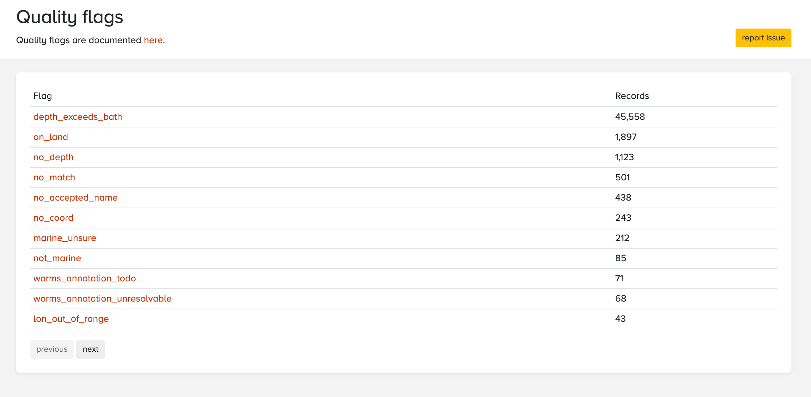
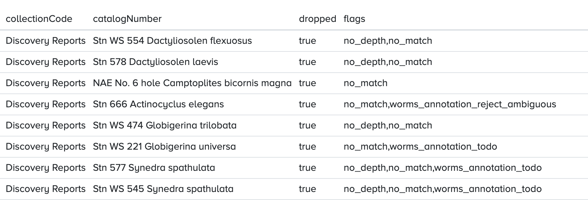

Data quality flags
As you are following the guidelines in this manual to format data, it is important to consider the potential quality flags that could be produced when your dataset is published to OBIS. OBIS performs a number of automatic quality checks on the data it receives. This informs data users of any potential issues with a dataset they may be interested in. A complete list of QC checks and associated flags can be found here. But to summarize, potential flags relate to issues with:
- Location - coordinates missing or incorrect
- Event time - start, end dates
- Depth - values out of range or outside of bathymetry
- Taxonomic
- WoRMS name matching - no match or missing in WoRMS
- Non-marine or terrestrial
When you are filling these fields it is important to double check that correct coordinates are entered, eventDates are accurate and in the correct format, and depth values are in meters. Records may be rejected and not published with your dataset if the quality does not meet certain expectations. In other cases quality flags are attached to individual occurrence records.
We acknowledge that sometimes you may encounter a QC flag for data that is accurate. For example, you may document a depth value that gets flagged as DEPTH_OUT_OF_RANGE or DEPTH_EXCEEDS_BATH. Sometimes this occurs because the measured depth value is more accurate than the GEBCO bathymetry data which OBIS bases its depth data on. In these cases, you can ignore the flag, but we recommend adding a note in eventRemarks, measurementRemarks, or occurrenceRemarks. For more details on how OBIS checks depth and environmental data based on location, see documentation on the xylookup.
The checks we perform as well as the associated flags are documented here.
QC Flags in downloaded data
There are several ways to inspect the quality flags associated with a specific dataset or any other subset of data. Data downloaded through the mapper and the R package will include a column named flags which contains a comma separated list of flags for each record. In addition, the data quality panel on the dataset and node pages has a flag icon which can be clicked to get an overview of all flags and the number of records affected.

This table includes quality flags, but also annotations from the WoRMS annotated names list. When OBIS receives a scientific name which cannot be matched with WoRMS automatically, it is sent to the WoRMS team. The WoRMS team will then annotate the name to indicate if and how the name can be fixed. Documentations about these annotations will be added here soon.

Clicking any of these flags will take you to a table showing the affected records. For example, this is a list of records from a single dataset which have the no_match flag, indicating that no LSID or an invalid LSID was provided, and the name could not be matched with WoRMS. The column originalScientificName contains the problematic names, as scientificName is used for the matched name.

At the top of the page there’s a button to open the occurrence records in the mapper where they can be downloaded as CSV. The occurrence table also has the flags column, so when inspecting non matching names for example it’s easy to check if the names at hand have any WoRMS annotations:

Inspecting QC flags with R
Inspecting flags using R is also very easy. The example below fetches the data from a single dataset, and lists the flags and the number of records affected. Notice that the occurrence() call has dropped = TRUE to make sure that any dropped records are included in the results:
library(robis)
library(tidyr)
library(dplyr)
# fetch all records for a dataset
df <- occurrence(datasetid = "f3d7798e-7bf2-4b85-8ed4-18f2c1849d7d", dropped = TRUE)
# unnest flags
df_long <- df %>%
mutate(flags = strsplit(flags, ",")) %>%
unnest(flags)
# get frequency per flag
data.frame(table(df_long$flags)) Var1 Freq
1 depth_exceeds_bath 78
2 no_accepted_name 17
3 no_depth 5
4 no_match 138
5 not_marine 2
6 on_land 1
7 worms_annotation_await_editor 5
8 worms_annotation_reject_ambiguous 2
9 worms_annotation_reject_habitat 2
10 worms_annotation_todo 9
11 worms_annotation_unresolvable 7This second example creates a list of annotated names for a dataset:
library(robis)
library(dplyr)
library(stringr)
# fetch all records for a dataset
df <- occurrence(datasetid = "f3d7798e-7bf2-4b85-8ed4-18f2c1849d7d", dropped = TRUE)
# only keep WoRMS annotations and summarize
df %>%
select(originalScientificName, flags) %>%
mutate(flags = strsplit(flags, ",")) %>%
unnest(flags) %>%
filter(str_detect(flags, "worms")) %>%
group_by(originalScientificName, flags) %>%
summarize(records = n()) originalScientificName flags records
<chr> <chr> <int>
1 Alcyonidium fruticosa worms_annotation_reject_habitat 1
2 Apicularia (Thapsiella) rudis sp. worms_annotation_unresolvable 1
3 Arcoscalpellum vegae worms_annotation_unresolvable 1
4 Balanus evermanni worms_annotation_await_editor 1
5 Chloramidae worms_annotation_reject_ambiguous 2
6 Cleippides quadridentatus worms_annotation_todo 1
7 Enhydrosoma hoplacantha worms_annotation_reject_habitat 1
8 Hippomedon setosa worms_annotation_unresolvable 1
9 Leionucula tenuis worms_annotation_await_editor 1
10 Ophiocten borealis worms_annotation_todo 1
11 Ophiopholis gracilis worms_annotation_todo 1
12 Priapulus australis worms_annotation_await_editor 1
13 Primnoella residaeformis worms_annotation_unresolvable 1
14 Robulus orbigny worms_annotation_unresolvable 1
15 Tetraxonia worms_annotation_unresolvable 2
16 Tmetonyx barentsi worms_annotation_await_editor 2
17 Triaxonida worms_annotation_todo 6